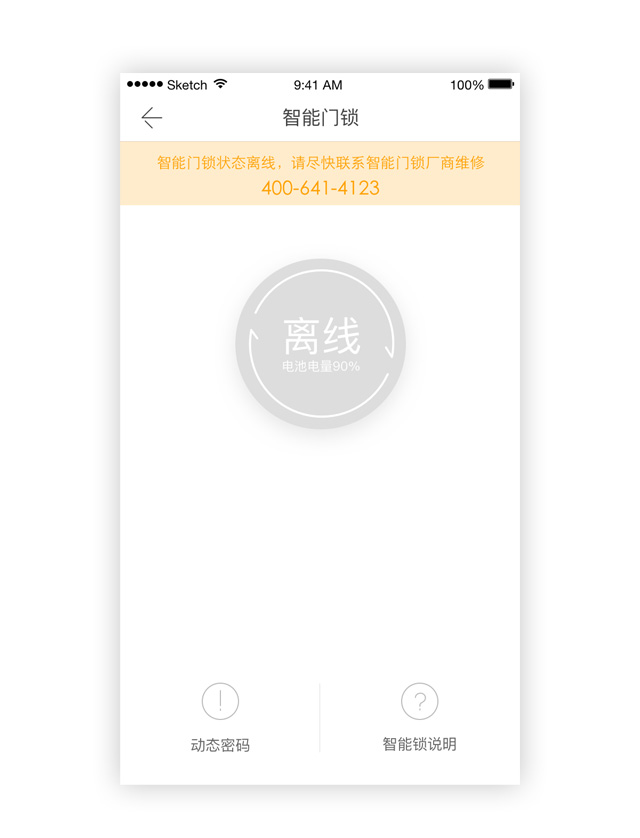

自如进入智能化时代，想想就有些小激动呢，智能门锁迈出了第一步，以后那些美国大片里的科技生活还远吗？万事开头难，对于刚上手的智能门锁是不是有很多疑问？且听我们一一解答。
只有保证基站在线，才能获取长期密码，如何保证基站在线呢？首先，连接基站的电源。其次，连接基站的网线。如果基站离线，就不能获取长期密码，只能获取一个2小时的临时密码。
门锁只开5秒哦，5秒内记得下压把手开门进屋，否则就要重输密码啦！
门锁存在两种不同的情况，所以设定密码的方式也会有不同~
当门锁显示绿色，代表门锁在线，可点击“申请临时密码”设置六位数门锁临时密码，您的临时密码下发成功后会收到短信通知提醒；
如果门锁显示灰色，代表基站离线，需要点击“动态密码”设置六位数门锁动态密码，您的动态密码下发成功后会收到短信通知提醒；
所以说，如果我要设置一个临时密码，我们必须保证基站在线！（关于基站在线问题请看PART1 智能锁和基站篇）